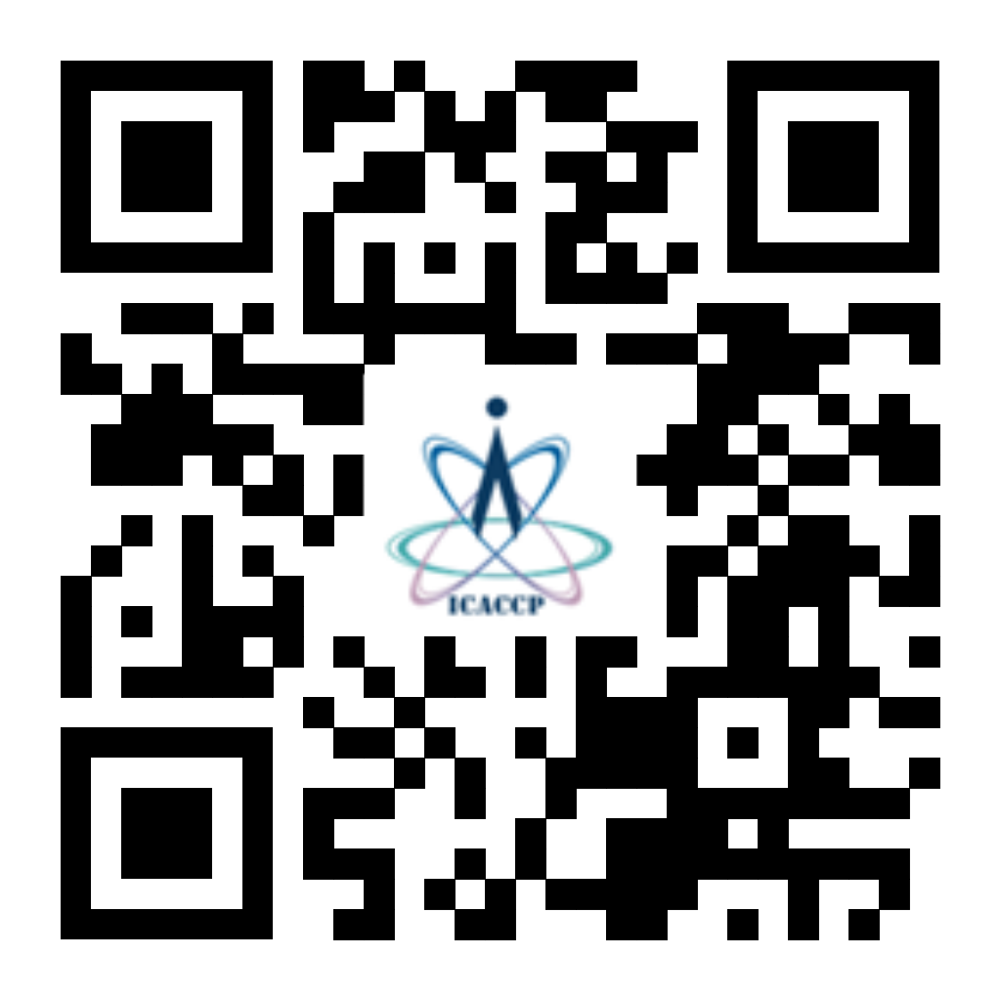

Call For Papers
The 5th International Conference on Advanced Computational and Communication Paradigms (ICACCP-2025) will be hosted by the Sikkim Manipal Institute of Technology (SMIT), Sikkim, India, from June 6 to 8, 2025. Since its inception in 2017, ICACCP has been held biannually, attracting researchers, academicians, and industry professionals from around the globe.
ICACCP-2025 invites submissions of original, high-quality research papers that contribute to the fields of advanced computational and communication paradigms. Topics of interest include, but are not limited to: Generative AI, Explainable AI, Federated Learning, 5G and Beyond, AI Applications in EVs, Bioinformatics, Blockchain and Cybersecurity, Robotics, Augmented Reality, Cyber-Physical Systems, Digital Twins, Energy-Efficient Computing, the Internet of Things (IoT), and related areas.
All submissions will undergo a rigorous review process conducted by domain experts, who will evaluate the papers based on significance, originality, and research quality. Accepted, registered, and presented papers will be considered for publication by Springer. Authors are encouraged to submit full-length papers (10–12 pages) using the Springer conference template.
To submit your paper, please click here. We look forward to receiving your submissions and welcoming you to ICACCP-2025. For more details about submission guidelines and important dates, please visit the conference website. For paper submission, please

Conference Tracks
| Track | Conference Track |
|---|---|
| Track 1 | Artificial Intelligence, Machine Learning & Soft Computing |
| Track 2 | Data Science, Big Data & Smart Analytics |
| Track 3 | Computer Vision, Image & Signal Processing |
| Track 4 | Communication Systems, IoT & Networks |
| Track 5 | Cybersecurity, Blockchain & High-Performance Computing |
| Track 6 | Robotics, Control Systems & Embedded Technologies |
| Track 7 | Application of Nonlinear Dynamics in Computer Science and Engineering |
| Track | Conference Track | Suggested Topics |
|---|---|---|
| Track 1 | Artificial Intelligence, Machine Learning & Soft Computing |
|
| Track 2 | Data Science, Big Data & Smart Analytics |
|
| Track 3 | Computer Vision, Image & Signal Processing |
|
| Track 4 | Communication Systems, IoT & Networks |
|
| Track 5 | Cybersecurity, Blockchain & High-Performance Computing |
|
| Track 6 | Robotics, Control Systems & Embedded Technologies |
|
| Track 7 | Application of Nonlinear Dynamics in Computer Science and Engineering |
|